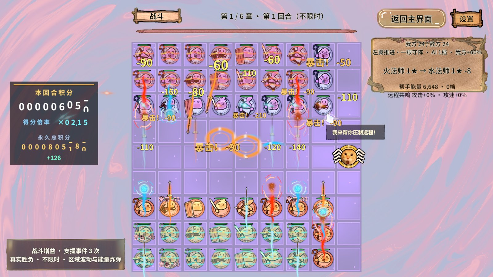
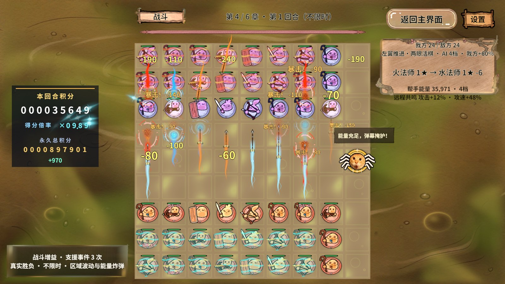
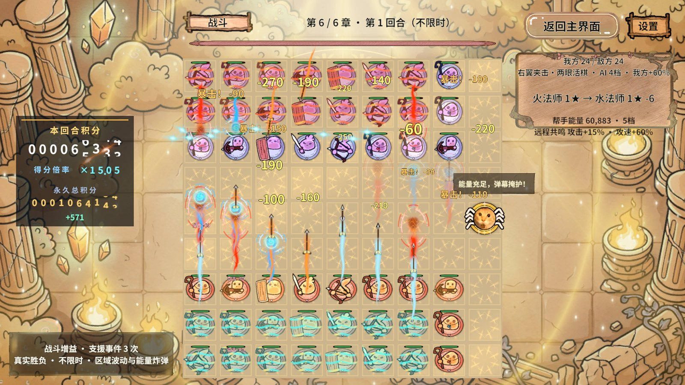
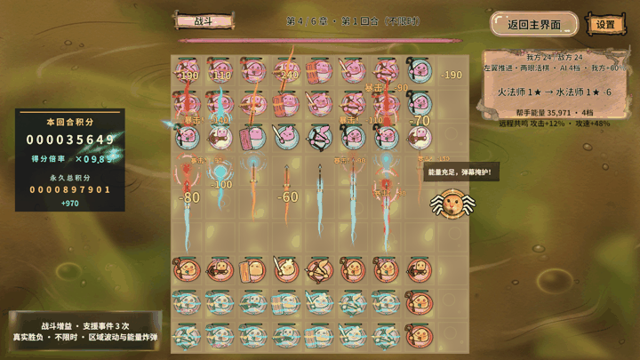

结论与有效边界
规则、密集反馈和场景回收检查通过；目标笔记本前台80～90FPS仍未验收。首轮采样后发现Unity窗口最小化，六章平均29.09～34.41FPS只能描述本次编辑器状态，不作为前台游玩性能结论。用户按Esc停止电脑操作，前台重测未执行。
没有修改游戏代码、降低画质或放宽断言；本次没有导出Profiler录制、内存快照或ZIP。
环境与版本
2026-10-31（Asia/Shanghai）；Unity 2022.3.15f1c1 / Windows Editor / Direct3D11 / PC真实AB / 1920×1080。设备i7-12700H、Intel Iris Xe。工作区HEAD=b89bd75且存在既有未提交改动；文档基线7706f7b，不能视为完全相同版本。
48棋固定压力夹具，每段预热2.5秒；维持血量保证持续负载。模型步长0.3125秒，20/35/16反馈预算。性能窗口禁用VSync、目标帧率限制和Profiler录制，结束恢复原设置。截图在计时窗口外采集。
本次断言
| 检查 | 实际结果 | 边界 |
|---|---|---|
| 查询缓存控制台 | 32,062条通过 | 链接当前生产源码；非Unity/GPU验收 |
| 密集反馈 | 通过 7252 条Play断言：120次合并、100目标控频、职业原画/即时伤害/35条连续齐射、避让/透明、居中、战斗换位与阶段清理；峰值飘字=20，弹道=35 | 表现注入夹具，非正常难度通关 |
| 六章持续战斗 | 6/6段，每段20秒，48棋、实际攻击 | 错误0，未取消，cleaned=true |
| 第4章往返 | 3/3次，每次10秒 | 错误0，末尾逻辑0、棋子图集引用0 |
| 80/90FPS | 首轮6章均不满足平均FPS与P95联合预算 | 窗口最小化；前台重测未执行 |
六章完整数据
墙钟帧间隔统计；P95/P99/GPU列单位ms。GPU与主线程并行，不能相加或从帧间隔简单扣除编辑器耗时。
| 章 | 秒 | 攻击 | 平均FPS | P95 | P99 | GPU P95 | 80/90预算 |
|---|---|---|---|---|---|---|---|
| 1 | 20.010 | 1013 | 31.53 | 65.56 | 82.95 | 6.24 | 未达标 |
| 2 | 20.006 | 1060 | 29.84 | 71.01 | 112.14 | 6.26 | 未达标 |
| 3 | 20.044 | 1305 | 29.09 | 67.55 | 132.33 | 6.57 | 未达标 |
| 4 | 20.029 | 1173 | 30.61 | 65.49 | 90.92 | 6.29 | 未达标 |
| 5 | 20.025 | 1239 | 34.41 | 55.59 | 69.21 | 5.74 | 未达标 |
| 6 | 20.025 | 1296 | 33.06 | 56.79 | 83.71 | 6.03 | 未达标 |
局部CPU对照
| 工作量 | 原路径ms | 新路径ms | 结论 |
|---|---|---|---|
| 48棋4800次射界查询 | 87.154 | 1.522 | 当前控制台样本耗时减少约98.25% |
| 48棋100次深快照含气眼 | 20.219 | 20.676 | 本轮未测到收益；不能照搬旧文档百分比 |
| 10万次战报拼接/缓存 | 10.082 | 24.324 | 本轮缓存路径更慢；分配从12000000降至0字节 |
| 10万次计分扫描/缓存（36棋） | 10.878 | 7.971 | 仅固定工作量局部测量 |
失败、收尾与未执行
首次连接使用系统Python 3.7，因Path.unlink(missing_ok)不兼容失败；切换Python 3.13后发现与调用成功。日志读取第一次传severity=Error被工具拒绝，改为已支持的小写error后返回0条错误。游戏性能作业错误计数均为0。
六章及往返作业均通过正式ReturnHome，cleaned=true、cancelled=false、returnLogic=0、returnPieceRefs=0；密集反馈返回Home且transitioning=false。收尾停止本次Play、解除隔离，并读取编辑器状态和场景确认。
未执行：前台六章复测、目标设备十分钟热态、优化前后同版本对照、180回合等价重放、默认全套攻击回归、独立Player/Android验收。三次往返不冒充十次。历史默认全量攻击回归失败记录没有被本次局部通过替代。
本次真实画面




可复现证据
本机原始机器证据（忽略目录，不随仓库交付）：D:\AAAAAAA王者荣耀项目组工作日志\RevGame\.codex\work\resume-perf-2026-10-31
六章runId：20261030-164340-12b90240；往返runId：20261030-164742-625b0586。各作业原始PNG/CSV/JSON位于其folder字段指定的.codex/work/perf-2026-10-30目录；文件夹沿用夹具旧名，实际测试日期是2026-10-31。